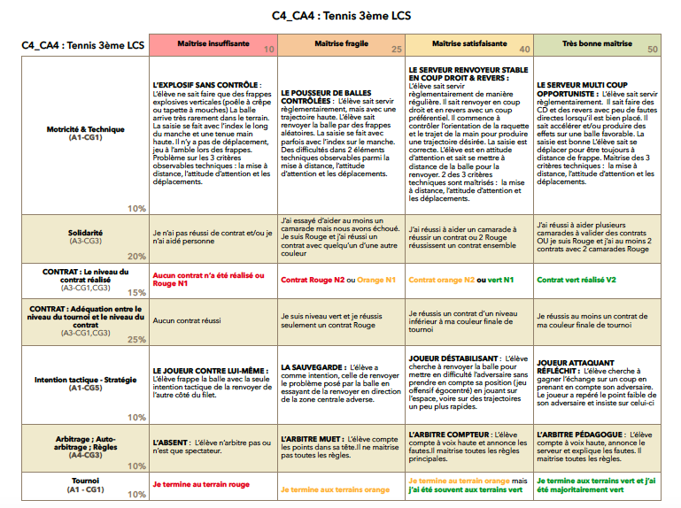
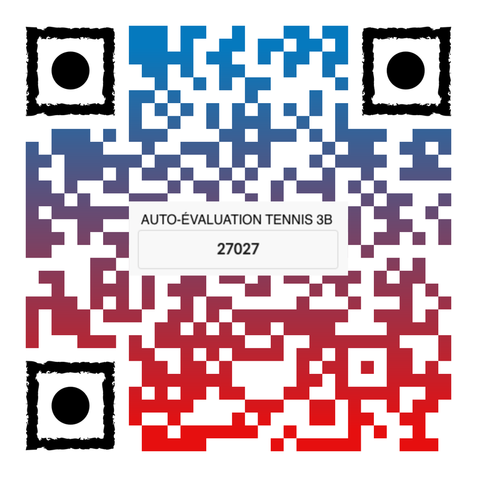
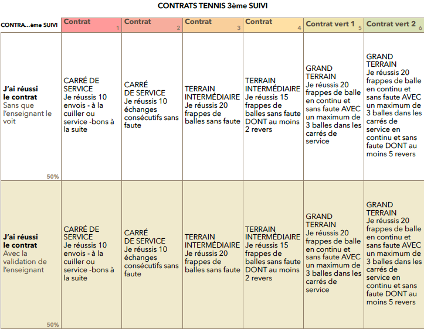

Auto et co-évaluation
L'objectif de cet article est de vous présenter un exemple concret de l'utilisation d'Idoceo en EPS, notamment dans l'activité tennis. Cette démarche est applicable à n'importe quelle APSA.
1°) Avec mes élèves de 3ème, j'utilise cette application afin de les aider à mieux connaitre les critères d'évaluation, à les manipuler. Ces derniers sont présentés dès le début de la séquence et les élèves peuvent s'auto-évaluer à chaque séance soit directement sur l'iPad, soit par le lien "idoceo connect" donné.
2°) Idoceo me permet également de suivre au mieux les réussites / échecs de mes élèves durant les séances. En effet, dès qu'un groupe d'élèves réussit un contrat, ils viennent renseigner leur réussite sur l'App ou attendent de rentrer chez eux pour le faire.
1°) Avec mes élèves de 3ème, j'utilise cette application afin de les aider à mieux connaitre les critères d'évaluation, à les manipuler. Ces derniers sont présentés dès le début de la séquence et les élèves peuvent s'auto-évaluer à chaque séance soit directement sur l'iPad, soit par le lien "idoceo connect" donné.
2°) Idoceo me permet également de suivre au mieux les réussites / échecs de mes élèves durant les séances. En effet, dès qu'un groupe d'élèves réussit un contrat, ils viennent renseigner leur réussite sur l'App ou attendent de rentrer chez eux pour le faire.
1°) Faire manipuler les critères d'évaluation
Ainsi, dès le début de la séquence, les élèves peuvent consulter la grille d'évaluation et me questionner au besoin. Ils remplissent leur propre auto-évaluation dès qu'ils se sentent en mesure de la réaliser. Cette auto-évaluation est modifiable, dès qu'un élève la réalise à nouveau, elle écrase la précédente. Nous sommes bien dans une évaluation au rythme de chacun, les élèves étant évalués dès lors qu'ils sont prêts.
Voici la grille d'évaluation qui sert également à l'auto-évaluation ainsi que le QRcode (réalisé à partir de ce site) mis sur Pronote et affiché sur les terrains.
Ainsi, dès le début de la séquence, les élèves peuvent consulter la grille d'évaluation et me questionner au besoin. Ils remplissent leur propre auto-évaluation dès qu'ils se sentent en mesure de la réaliser. Cette auto-évaluation est modifiable, dès qu'un élève la réalise à nouveau, elle écrase la précédente. Nous sommes bien dans une évaluation au rythme de chacun, les élèves étant évalués dès lors qu'ils sont prêts.
Voici la grille d'évaluation qui sert également à l'auto-évaluation ainsi que le QRcode (réalisé à partir de ce site) mis sur Pronote et affiché sur les terrains.


L'élève scanne le QRcode (ou se rend directement sur Idoceo connect et rentre le code PIN du QRcode) inséré sur Pronote dans les devoirs à faire, et peut ainsi réaliser son auto-évaluation. Par une simple manipulation sur Idoceo, les résultats s'actualisent immédiatement sur la tablette.
L'enseignant peut alors discuter avec l'élève afin de mieux préciser les critères dans le cas d'une auto-évaluation qui manque d'objectivité.
L'auto-évaluation est transformée en note chiffrée, l'élève peut constater ses progrès d'une séance à l'autre et comprendre comment améliorer sa note.
Sur l'image de droite, vous avez un aperçu du rendu, élève par élève, sur l'iPad de l'enseignant.
Comme précisé précédemment, il suffit à l'élève de refaire son évaluation afin de l'actualiser. L'enseignant verra la dernière version avec la date qui s'affiche en dessous de la note.
Une fois que tous les élèves ont pu réaliser leurs auto-évaluations, l'enseignant peut fermer sur Idoceo la possibilité de modification.
Depuis que je procède de cette façon, je n'ai jamais eu autant de questions sur les modalités d'évaluation et les élèves me semblent bien plus acteurs de leurs apprentissages.
Ce type de pratique nous autorise à évaluer les élèves à leur rythme et à leur demande, quand ils ont conscience de maitriser les critères.
L'enseignant peut alors discuter avec l'élève afin de mieux préciser les critères dans le cas d'une auto-évaluation qui manque d'objectivité.
L'auto-évaluation est transformée en note chiffrée, l'élève peut constater ses progrès d'une séance à l'autre et comprendre comment améliorer sa note.
Sur l'image de droite, vous avez un aperçu du rendu, élève par élève, sur l'iPad de l'enseignant.
Comme précisé précédemment, il suffit à l'élève de refaire son évaluation afin de l'actualiser. L'enseignant verra la dernière version avec la date qui s'affiche en dessous de la note.
Une fois que tous les élèves ont pu réaliser leurs auto-évaluations, l'enseignant peut fermer sur Idoceo la possibilité de modification.
Depuis que je procède de cette façon, je n'ai jamais eu autant de questions sur les modalités d'évaluation et les élèves me semblent bien plus acteurs de leurs apprentissages.
Ce type de pratique nous autorise à évaluer les élèves à leur rythme et à leur demande, quand ils ont conscience de maitriser les critères.

2°) Fiche de suivi durant la séquence
Lors de la séquence de tennis, les élèves doivent valider des contrats parmi trois niveaux de difficultés : Rouge - Organge - Vert.
Pour la validation finale, les contrats doivent être passés en présence de l'enseignant. Toutefois, durant le cycle, les élèves renseignent sur Idoceo le niveau qu'ils ont atteint.
Comme pour l'auto-évaluation, les élèves trouvent un QRcode sur Pronote et remplissent le niveau atteint durant les leçons. Ce suivi m'aide à cibler les élèves à aider et surtout me permet d'affecter certains élèves à l'aide (voir compétence solidarité).
Ainsi, aucune surprise pour l'enseignant et l'élève car le suivi est réalisé séance par séance.
Lors de la séquence de tennis, les élèves doivent valider des contrats parmi trois niveaux de difficultés : Rouge - Organge - Vert.
Pour la validation finale, les contrats doivent être passés en présence de l'enseignant. Toutefois, durant le cycle, les élèves renseignent sur Idoceo le niveau qu'ils ont atteint.
Comme pour l'auto-évaluation, les élèves trouvent un QRcode sur Pronote et remplissent le niveau atteint durant les leçons. Ce suivi m'aide à cibler les élèves à aider et surtout me permet d'affecter certains élèves à l'aide (voir compétence solidarité).
Ainsi, aucune surprise pour l'enseignant et l'élève car le suivi est réalisé séance par séance.


J'espère que ce petit article vous aura permis de mieux vous rendre compte des possibilités d'idoceo en EPS. Et ce n'est là qu'une partie de ce que l'on peut faire.
Christophe Honthaas - EPS Mania
Christophe Honthaas - EPS Mania
… visites de cette page
Laisser un message
Aucun message pour le moment. Soyez le premier !